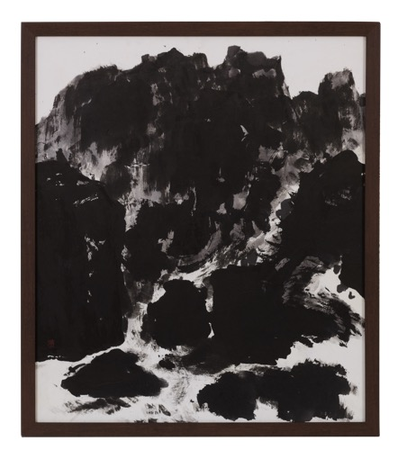
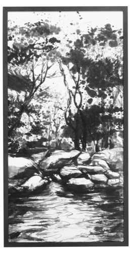
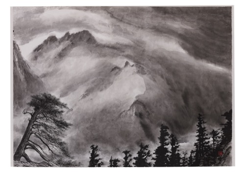
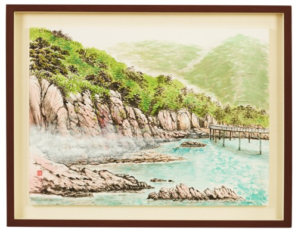
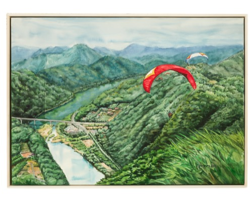
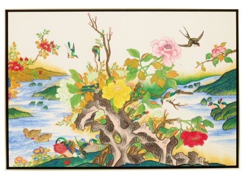
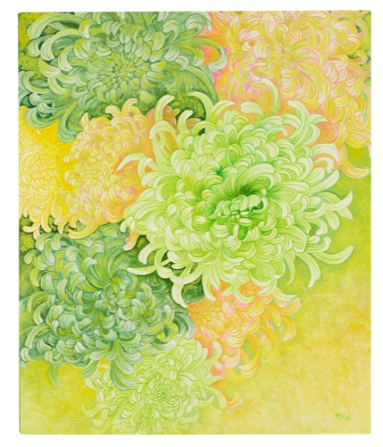
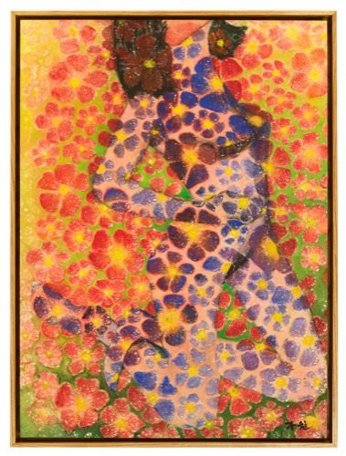

보내주신 사진 58점 잘 받았습니다. 홍보물(포스터·인스타·전광판·미디어월) 제작을 위해
① 대표로 사용할 이미지 후보를 저희가 먼저 골라봤습니다 — 확인/변경 부탁드립니다.
② 파일명에 작가님 성함이 없는 작품 11점이 있어 어느 작가님 작품인지 알려주시면 감사하겠습니다.
1대표 이미지 후보 제안 (8점)
전시 톤(초대장 기준: 네이비·골드·명조)에 맞춰 격조 있는 수묵/풍경 작품과, 전시의 다채로움을 보여줄 화사한 작품을 균형 있게 골라봤습니다. 최종 선정은 회장님·협회 의견을 따르겠습니다.
메인 포스터 · 인스타용 (세로, 차분한 톤)

No.023
강광일
흑백 수묵 산수 — 강렬한 붓터치, 네이비 배경과 조화

No.036
김화선
흑백 수묵 풍경 — 세로로 길어 포스터 상단 구성에 적합

No.017
박영희
수채 해안 풍경 — 은은한 톤, 온화한 무드
미디어월 · 입구전광판용 (가로, 파노라마 스케일)

No.049
정연조
청록 해안절벽 — 초광폭 파노라마에 가장 잘 어울림

No.042
김대성
패러글라이딩 풍경 — 시원한 스케일감, 역동적

No.043
서희정
봄 화조도 — 화사하고 장식적
다양성 강조용 (화사한 색감)

No.041
신현지
국화 그림 — 연두·노랑 화사한 색감

No.056
홍영숙
화사한 꽃 그림 — 밝고 생동감 있음
확인 부탁드립니다 — 위 8점 중 메인 포스터에 크게 쓸 1점을 정해주시거나, 저희가 제안한 순서대로 진행해도 괜찮을지 알려주세요.
또한 회장님 작품(No.055)을 대표 이미지에 포함할지, 별도로 예우 차원에서 소개할지도 의견 부탁드립니다.
2작가 미확인 작품 (11점)
파일명이 카메라 자동 생성명(여의도문화원...)으로 되어 있어 작가 성함을 알 수 없습니다. 서예·수묵화·채색화가 섞여 있으며, 번호 순서상 015번(박유섭 작가님) 이전으로 추정됩니다. 각 작품 아래 성함을 적어 회신해 주시면 참여작가 명단에 반영하겠습니다.
📱 카카오톡으로 답변 주실 때
사진 번호(예: "미확인 3 = 김ㅇㅇ")로 답장 주시면 됩니다. 편하신 방법으로 알려주세요.